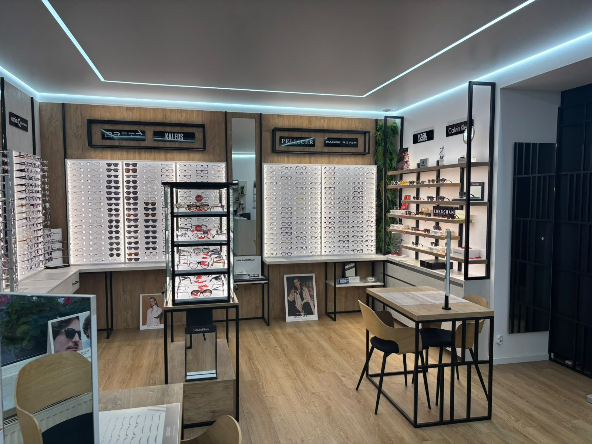
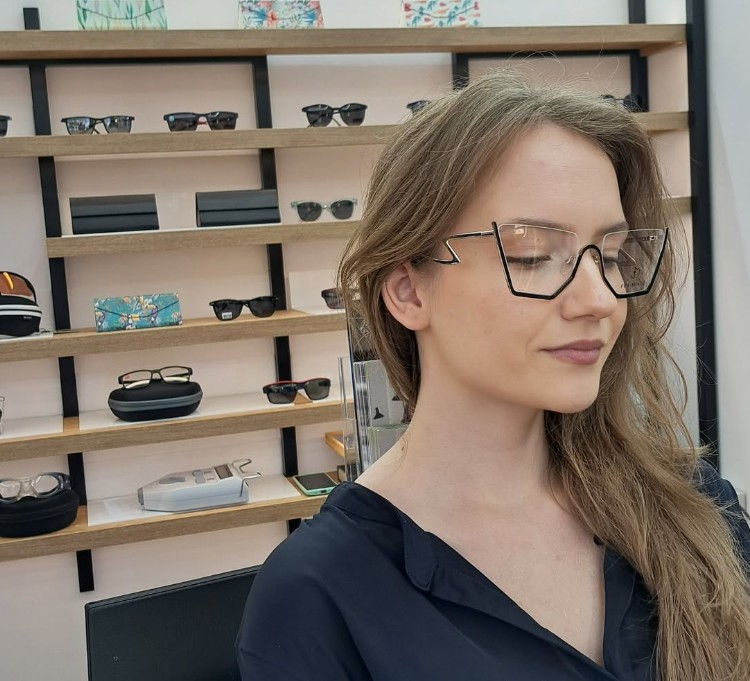

Antyrefleks
Mniej odbić oraz większy komfort widzenia.
Okulary korekcyjne w Lublinie
Dobierzemy oprawy i soczewki do Twojego wzroku, stylu i codziennych potrzeb.

Dobierz do swojego dnia

Dopasowanie ma znaczenie
Przymierz różne kształty i kolory. Wspólnie znajdziemy oprawy dopasowane do Twojej twarzy i wygody.
Soczewki korekcyjne
Mniej odbić oraz większy komfort widzenia.
Soczewki ściemniające się w świetle.
Możliwości dopasowane do korekcji i oprawy.
Jak wygląda realizacja
Poznajemy Twoje potrzeby i wynik badania.
Wspólnie wybieramy wygodne rozwiązanie.
Sprawdzamy, czy okulary dobrze leżą.
Jeśli masz aktualny wynik badania lub receptę, zabierz go. Jeśli nie, zapytaj o badanie wzroku.
Czas realizacji zależy od rodzaju soczewek i oprawek. Podamy go przy zamówieniu.
Tak, wybór oprawek to najprzyjemniejsza część wizyty.
Zapytaj o dostępny termin.
Poznaj także
Jedna para na różne odległości.
Ochrona oczu, która dobrze wygląda.
Odwiedź nasz salon w Lublinie.